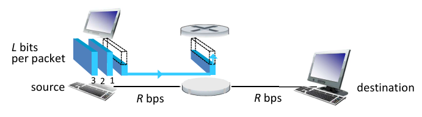
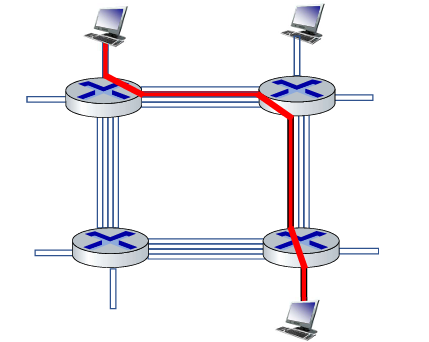

Team Members
Qasim Batrawi - 1220204 - Computer Engineering Student
Projects:
- Pipelined Processor - Computer Architecture.
- Palestinian Airline Website - Database.
- Multi Cycle Processor - Advanced Digital.
- Single Cycle Processor - Computer Organization.
Hobbies & Skills:
- Programming.
- Leadership.
- Team work.
Taleed Hamadneh - 1220006 - Computer Engineering Student
Projects:
- Pipelined Processor - Computer Architecture.
- Palestinian Airline Website - Database.
- Multi Cycle Processor - Advanced Digital.
- Single Cycle Processor - Computer Organization.
Hobbies & Skills:
- Programming.
- Leadership.
- Team work.
Packet Switching vs Circuit Switching
Packet switching and circuit switching are two different techniques for sending data across a network. Each method has its own way of handling data transmission, with unique advantages and disadvantages.
Packet Switching
In packet switching, data is broken into small packets that are transmitted independently across the network. Each packet may follow a different path depending on network conditions and is reassembled at the destination. This technique is commonly used in the Internet and other modern data networks.
Advantages:
- Scalable and cost-effective.
- Efficient use of bandwidth.
- Better overall network efficiency.
Disadvantages:
- Packet loss possible.
- Overhead due to packet headers.
Circuit Switching
In circuit switching, a communication path is established between the sender and receiver before data transfer starts. This path stays active for the entire duration of the communication session. Circuit switching is mainly used in traditional telephone networks.
Advantages:
- Reliable and stable communication.
- Low latency and minimal delay.
- Simple and predictable performance.
Disadvantages:
- Costly infrastructure.
- Dedicated path is wasted if the users are silent.